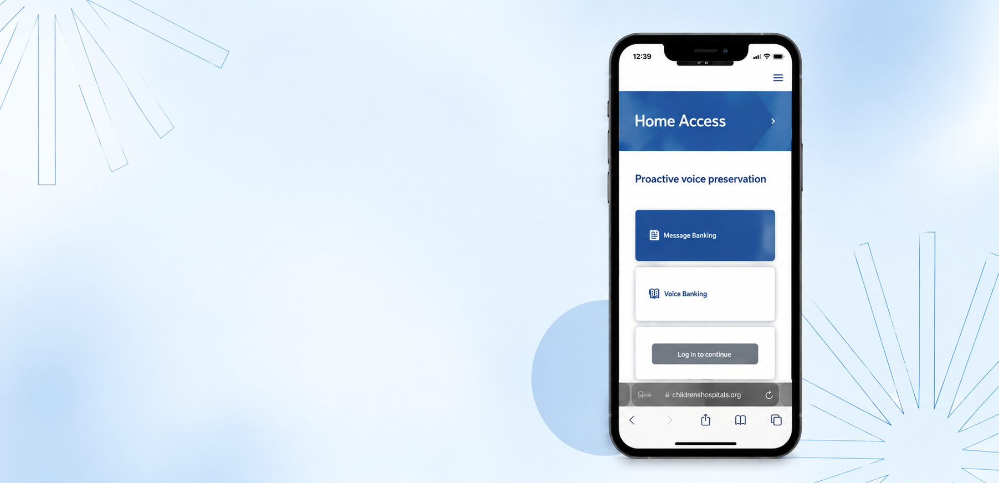

Overview
The ALS Clinical Decision Tool is a mobile web application concept designed to help clinicians quickly find, save, organize, and share evidence-based resources for ALS patient care.
- CLIENT
- Boston Children’s Hospital
- ROLE
- UX/UI Design, Research, Prototyping
- TIMELINE
- 2025
- FOCUS
- Workflow, accessibility, information architecture
DESIGN APPROACH
Industry problem
Complex clinical information creates confusion and delays for healthcare providers managing ALS patients.
Solution
- Guided survey to resources
- A way to save and organize resources
- A way to share resources with clinicians
- Improved visual design of app
KEY FEATURES
Bookmarking
- Create new folders
- Rename existing folders
- Move
- Share
- Delete folders
Accessibility settings
- Font size adjustment
- Font weight controls
- Color scheme customization
- Contrast adjustment
Home AccessMessage BankingVoice BankingResources
ResourcesCommunicationNutritionMobility
My FoldersFavoritesPatient EducationClinical Guidelines
IMPACT & OUTCOMES
Designed to make critical information easier to act on.
- Helped reduce cognitive load for healthcare providers
- Improved speed and confidence in clinical decisions
- Delivered an accessible and scalable design system for ALS care teams
“My favorite part is user research and prototyping. Engaging with real users to uncover needs and pain points, then rapidly testing solutions to iterate toward meaningful impact, motivates me every day.”
— Heather Davies